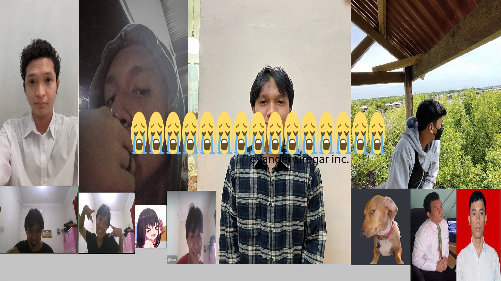

Biografi

Saya merupakan lulusan D3 Politeknik Negeri Medan jurusan Teknik
Komputer dan Informatika yang memiliki minat dalam bidang IT seperti
Hardware dan Software, Networking, Manajemen Database dan Web
Developer, serta juga memiliki minat dibidang Maintenance dan
Administrasi. Sedang mencari kesempatan untuk mengembangkan
kemampuan saya untuk bekerja di bidang IT. Saya suka mempelajari hal
baru, pekerja keras dan mampu bekerja di bawah tekanan
Geografis

Kota Bandung dikelilingi oleh pegunungan, sehingga bentuk morfologi
wilayahnya bagaikan sebuah mangkok raksasa,[9] secara geografis kota
ini terletak di tengah-tengah provinsi Jawa Barat, serta berada pada
ketinggian ±768 m di atas permukaan laut, dengan titik tertinggi di
berada di sebelah utara dengan ketinggian 1.050 meter di atas
permukaan laut dan sebelah selatan merupakan kawasan rendah dengan
ketinggian 675 meter di atas permukaan laut.
Kota Bandung dialiri dua sungai utama, yaitu Sungai Cikapundung dan
Sungai Citarum beserta anak-anak sungainya yang pada umumnya
mengalir ke arah selatan dan bertemu di Sungai Citarum. Dengan
kondisi yang demikian, Bandung selatan sangat rentan terhadap
masalah banjir terutama pada musim hujan.
Wisata
Sejak dibukanya Jalan Tol Cipularang, kota Bandung telah menjadi
tujuan utama dalam menikmati liburan akhir pekan terutama dari
masyarakat yang berasal dari Jakarta sekitarnya. Selain menjadi kota
wisata belanja, kota Bandung juga dikenal dengan sejumlah besar
bangunan lama berarsitektur peninggalan Belanda.
Farm House Lembang

Berada di jalur utama Bandung-Lembang, Farm House menjadi objek
wisata yang tidak pernah sepi pengunjung. Selain karena letaknya
strategis, kawasan ini juga menghadirkan nuansa wisata khas Eropa.
Semua itu diterapkan dalam bentuk spot swafoto Instagramable.
Observatorium Bosscha

Memiliki beberapa teleskop, antara lain, Refraktor Ganda Zeiss,
Schmidt Bimasakti, Refraktor Bamberg, Cassegrain GOTO, dan
Teleskop Surya. Refraktor Ganda Zeiss adalah jenis teleskop
terbesar untuk meneropong bintang. Benda ini diletakkan pada atap
kubah sehingga saat teropong digunakan, atap tersebut harus
dibuka. Observatorium Bosscha boleh dikunjungi oleh siapapun,
tanpa tiket. Namun, bagi yang ingin menggunakan teleskop Zeiss,
wajib mendaftarkan diri. Untuk instansi atau lembaga pendidikan,
diberikan jadwal hari Selasa sampai Jumat. Sementara itu,
kunjungan individu dibuka setiap hari Sabtu.